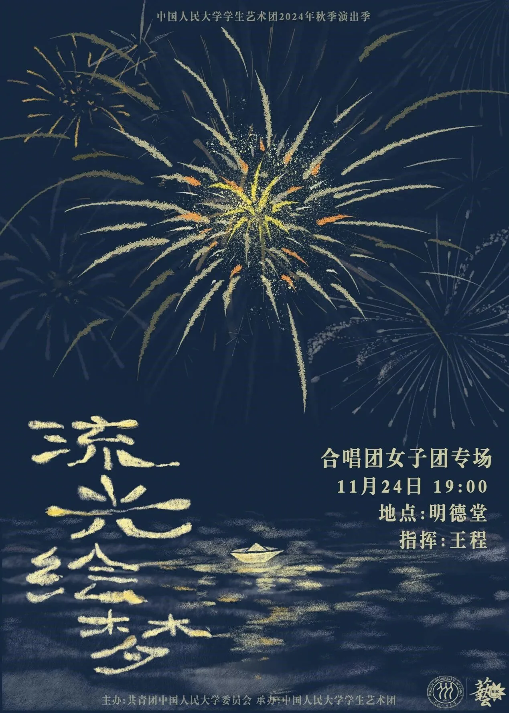
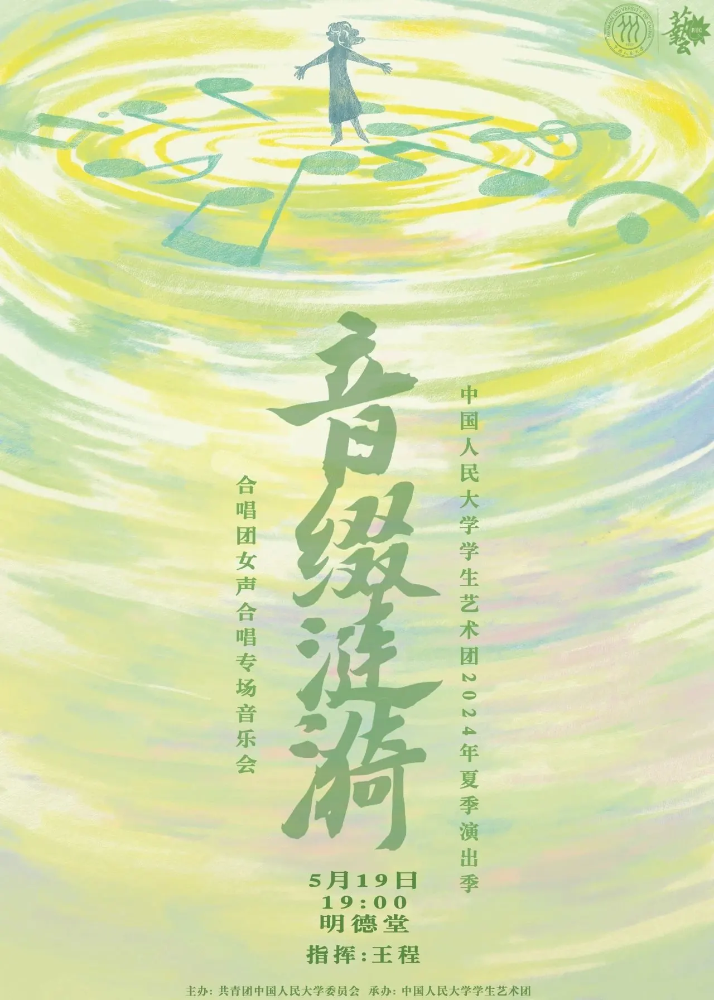
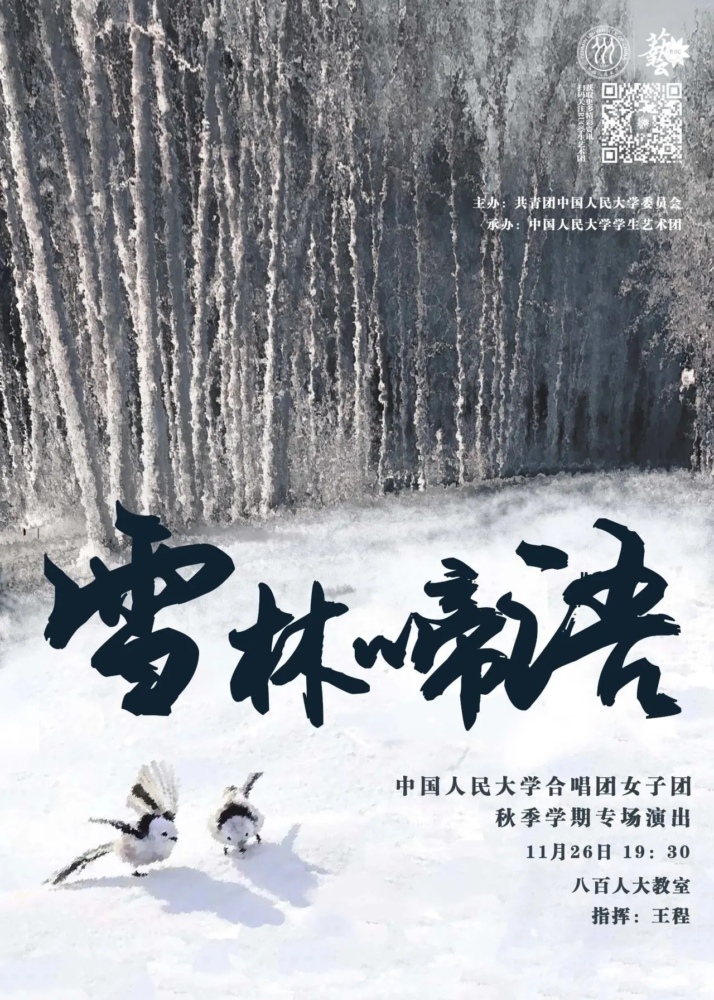
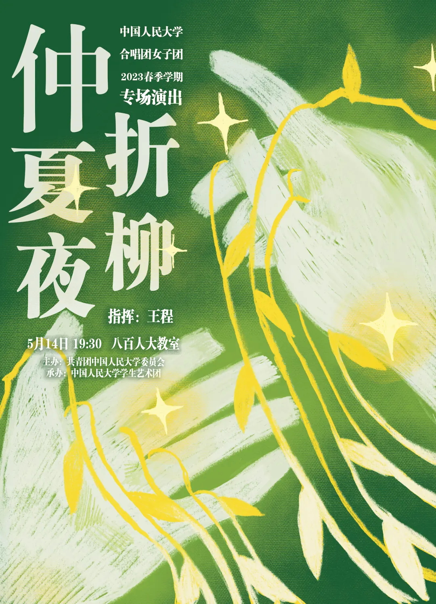

“流光绘梦”女声专场音乐会
在悠扬的歌声中，做一场充满幻想与憧憬的梦。梦中，公主与王子在美丽的灯心草上相会，踏着圆舞曲，跳着华尔兹；孩子们拿着纸鸢嬉戏，纸鸢带着孩童的歌谣飞进游子梦中；映山红漫山遍野，蒲公英化作清晨露珠。今夜，让歌声编织出幻梦。
- 演出时间
- 2024年11月24日（周日）19:00
- 演出地点
- 明德堂
展开“流光绘梦”完整节目单
上半场
- Song of Hope（希望之歌）
- Sur le joli jonc（在美丽的灯心草上）
- Juntos（团结）
- 圆舞曲
- BAЛbC（睡美人）
- 难忘的歌（歌剧《八女投江》选段）
- 太阳出来了
- Tonight（今夜）
- Love and Deepspace（恋与深空）
中场特邀
- 等你到天明
- Sit Down, You're Rockin' the Boat
下半场
- 信じる（相信）
- 蒲公英不说一语
- 一剪梅·舟过吴江
- 村居
- 摇篮曲
- 嫌疑人X的献身
- 想你的365天
- 我唱出了世界的声音

“音缀涟漪”女声专场音乐会
雨后的茶林，对鸟啁啾，蝴蝶振翅，随春日的气息一同传来。穿过罗马尼亚的街巷，越过赫里福德的海港，在歌声中走进放映机里的一段段故事。岁月流转，我们唱出世界的声音，也让万物聆听。爱在音乐里的回响，是心中泛起的阵阵涟漪。
- 演出时间
- 2024年5月19日（周日）19:00
- 演出地点
- 明德堂
展开“音缀涟漪”完整节目单
上半场
- Butterfly（蝴蝶）
- 采茶
- 对鸟
- 哦嘫
- 雨霖铃
- Harasztosi legénynek（给哈拉斯托斯的小伙子）
- 春よ、来い（春天，来吧）
- Sea Fever（恋海）
下半场
- The Magic of Wizard Davinza（巫师达文扎的魔法）
- 城南送别
- 《放牛班的春天》电影组曲
- 宫崎骏动画电影组曲
- 岁月
- 暗涌
- 萱草花
- 追光者
- 我唱出了世界的声音

“雪林啼语”女声专场音乐会
雪又落下来了，有棱有角的世界变得圆圆的、白白的。无需打伞，尽管欣赏鸟儿和猫儿们的脚印、奇形怪状的雪人和偶然飘落在爱人睫毛上的雪花。雪是一种被珍爱的寒冷。
- 演出时间
- 2023年11月26日（周日）19:00
- 演出地点
- 明德堂
展开“雪林啼语”完整节目单
上半场
- Las Amarillas
- The Snow
- Flying, Singing Bird
- 爱の花
- My Long Forgotten Cloistered Sleep
- Five Hebrew Love Songs
- Moon Goddess
下半场
- 竹楼梦幻
- 阿里郎
- 杏花天影
- 渔歌子
- 耕南送子
- 永远
- 我唱出了世界的声音

“仲夏夜折柳”女声专场音乐会
仲夏，万物疯长成一片森林，天空是雨、云和蓝色。傍晚的热浪中总会混进一丝凉爽的风，吹拂牵手漫游的恋人，也吹拂幸福与孤独的人们。让我们在这一丝凉风中折柳踏歌，在时而柔美、时而热情，或快乐、或哀伤的歌声里，闭上眼睛，做一个好梦。
- 演出时间
- 2023年5月14日（周日）19:00
- 演出地点
- 八百人大教室
展开“仲夏夜折柳”完整节目单
上半场
- Over the Rainbow
- 夢をあきらめないで（请不要放弃梦想）
- 풍문으로 들었소（听到传闻）
- Typewriter
- Oklahoma
- Благословляю Вас, Леса（我祝福你啊，森林）
- The Water Dance of Lluvia
毕业生小合唱
- 我愿意
下半场
- 对花
- 高原，我的家
- 天乌乌
- 小阳关三叠
- 长相思
- 葡萄园夜曲
- 小城故事
- 外面的世界
- Kimberly的晚安歌
- 我唱出了世界的声音